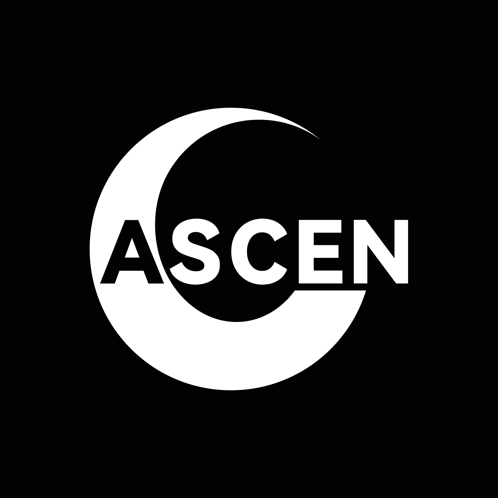
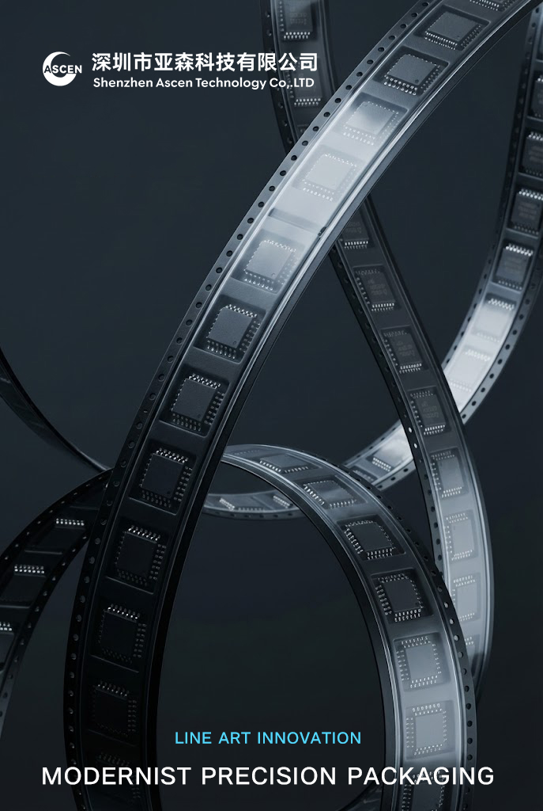
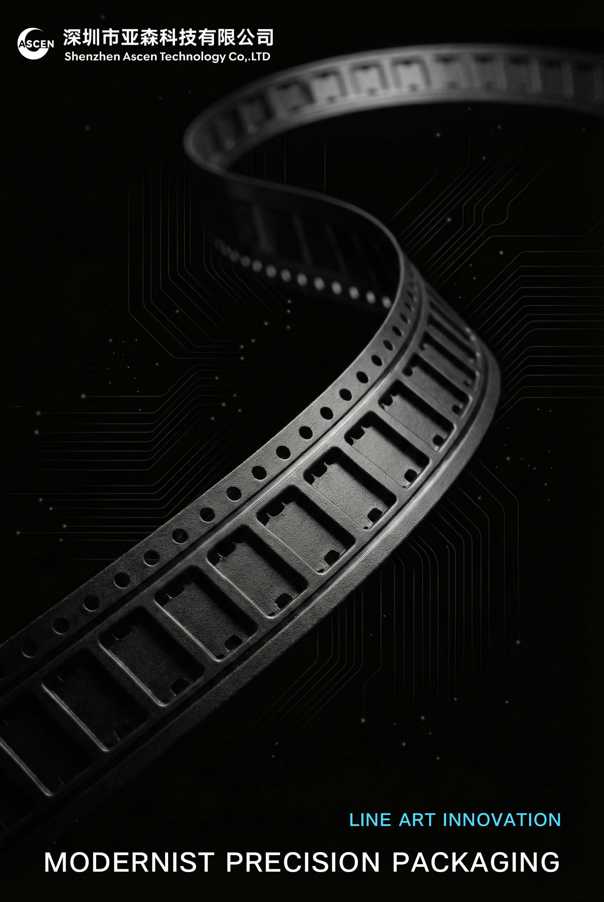
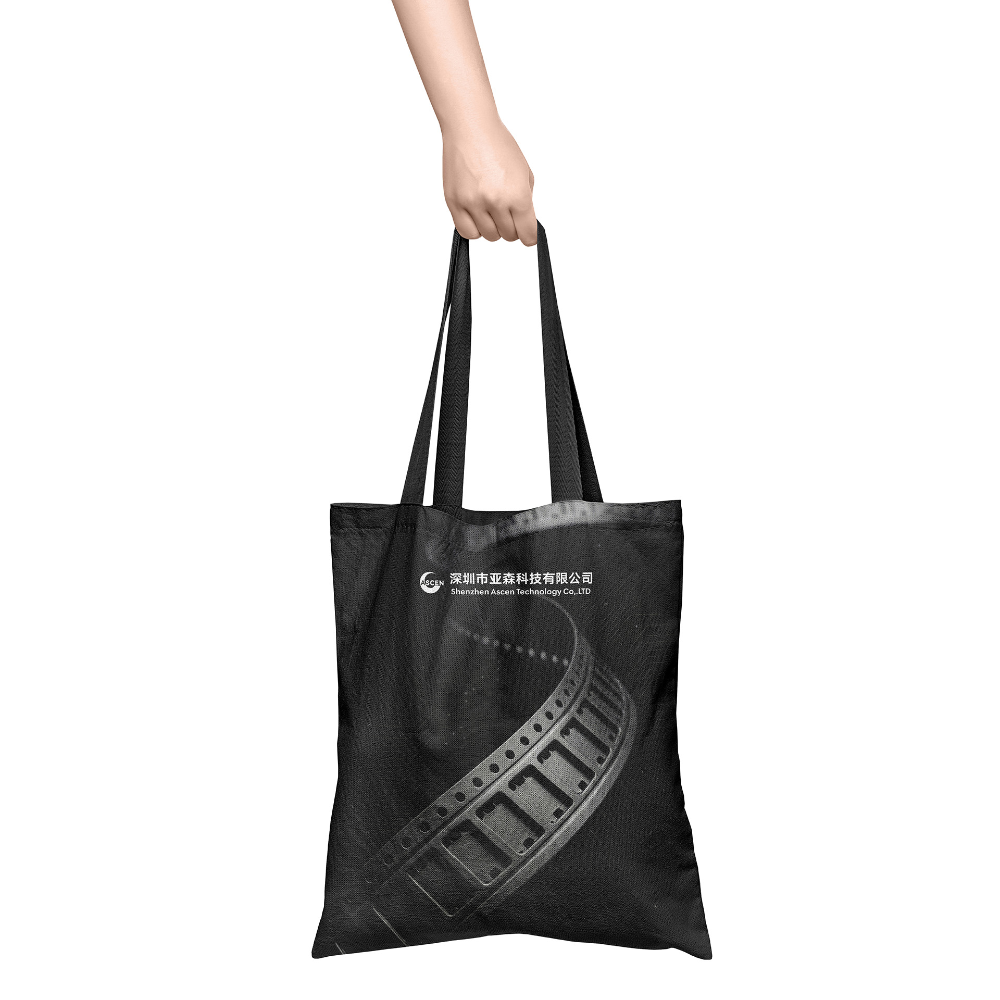

亚森科技
Ascen Technology Rebranding
访问线上官网 Live Website

品牌重塑策略 Strategy
亚森科技（Ascen Technology）是一家专注于电子载带（Carrier Tape）制造的高新技术企业。 旧形象过于传统，缺乏国际化视野。本次升级的核心策略是“Invisible Precision（隐形的精密）”——将微小的电子封装工艺放大，通过极简的几何线条展现工业制造的理性美学。
标志设计 Logo Design
Logo 以企业首字母 "A" 为基础，巧妙融合了行业核心产品形态——“卷盘 (Reel)”与“负形 (Negative Space)”的设计手法。圆弧缺口象征着开放与连接，黑白配色传递出严谨、专业的品牌气质。

- Reel Shape: 呼应载带卷盘形态
- Ascent: 象征上升与突破的 "A"
- Minimalism: 极简几何，易于工业应用
辅助图形与插画 Visual Language
为了解决工业品枯燥难懂的问题，我们提取了载带的结构图纸，将其转化为蓝色的线构插画（Line Art）。这些图形被广泛应用于海报和官网背景中，构建出独特的“工程师浪漫”。

机械结构艺术化演绎

精密封装流程可视化
物料落地 Applications
VI 系统延伸至线下物料，包括商务名片、帆布袋及办公用品，确保品牌触点的一致性。


数字化体验 Web Design
构建了全新的响应式官网，优化了 B 端客户的信息获取路径。通过深色模式与高亮蓝色的对比，营造出高端制造的科技氛围。

Web UI / UX Design